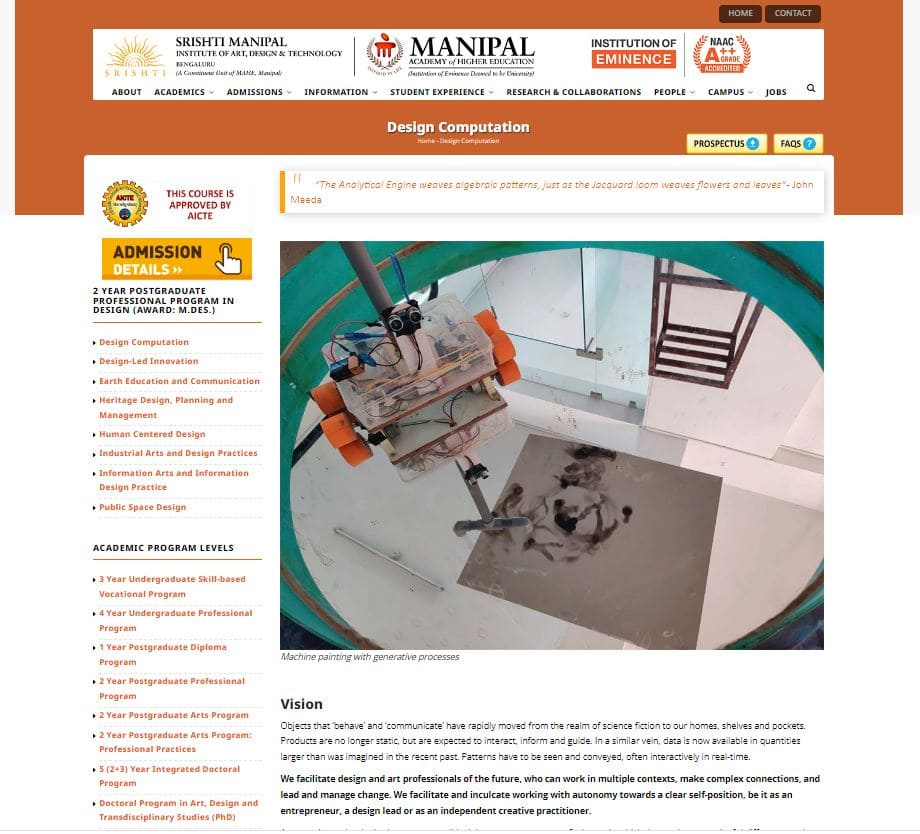

An interactive human-robot collaborative art installation featuring a shy robot that creates unique soot paintings on a ceiling canvas, fleeing when viewers approach it.
The Robot That Paints with Fire
Can a machine be creative?
Our goal was to create an interactive piece that makes people question everything they know about art, using an unexpected medium: fire, smoke and a machine.
What we created
Interactive installation that responds to human movement.
Unique soot artworks created through fire and smoke.
Arduino-powered system with sensors and motor control.
From Code to Canvas: The Making of Shy Guy
Step 1: Conceptual Brainstorming
Our process began with wide-ranging brainstorming, exploring different mediums and mechanisms for our artsy bot. These initial notes mapped our first ideas as we searched for a unique artistic voice for our machine.

Step 2: The "Aha!" Moment & Sketch
Inspired by candle soot art, we pivoted to the thrilling medium of fire and smoke. This conceptual sketch by Anirudha then brought our vision to life, defining the robot's physical form and its core interactive loop.
Step 3: Digital Prototyping
Before building, we coded and simulated the logic for motors and sensors in TinkerCAD. This digital prototyping ensured our electronics and code for movement and interaction were sound before we ever touched physical hardware.
Step 4: Giving It Personality & Purpose
The concept of a robot that moves away when it senses motion gave it character. We named him 'Shy Guy,' a creature of code and candlelight programmed with one simple directive: create beautifully, but flee when approached.
Step 5: Thus, 'Shy Guy' Was Born
Built for around ₹1500, Shy Guy was a clever example of making the most of what we had: Arduino in a Tupperware box, wooden wheels, and PVC pipes for the frame.
The Magic of the Mirror
We turned the painting experience into an installation. The canvas hung from the ceiling, and a salvaged mirror became the dance floor. This setup let viewers engage comfortably, watching the artistic process unfold through the reflection in the mirror.
The Collaborative Artwork
Shy Guy shies away with fire. These shots capture the magic- the flicker of the candle, the trail of soot on the canvas, and the robot's elusive dance as it reacted to the audience's movements.
The Soot Paintings
Shy Guy didn't paint for us, but with us. Its unpredictable movements, combined with human interaction, created truly unique, generative artworks.
Learning from the Code
Motion sensors detect human presence and trigger retreat behavior.
Simple code creates complex, personality-driven interactions.
Programmed randomness ensures each artwork is unique.
Learning Through Fire
Embrace Constraints
Limited budget and materials fueled greater creativity.
Prototype Everything
Digital simulations save countless hours of physical debugging.
Interaction is Key
The art wasn't the painting alone, but the entire human-robot performance.
Recognition & Impact
This work was showcased at the 'Artsy Bots: Generative Art and Collaborative Performances' exhibit, Indian Institute of Science, Bengaluru. The robot image was also used in Srishti Manipal's admissions site, highlighting its success as a fusion of technology, art, and interactive design.